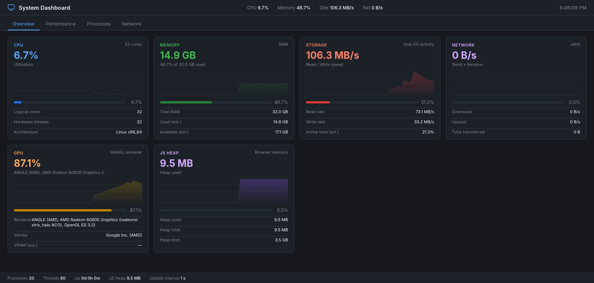

×
Building a live System Dashboard in < 1 hour with an AI agent and a browser feedback loop
Press → to advance | Press F for fullscreen | Click screenshots to zoom
An AI coding agent built on a Claude foundation model with a rich, composable tool ecosystem
Anthropic Claude model running inside the Bob framework. Receives a system prompt defining its role, skills, and tool palette. Reasons step-by-step and selects the right tool for each action.
File I/O (read_file, write_file, apply_diff),
code search (grep, glob, FindSymbol),
shell execution (execute_command), todo tracking, and more.
Any MCP (Model Context Protocol) server can be wired in, extending the agent's reach to databases, APIs, browsers, and external services.
Gives the AI agent direct, programmatic access to a live browser — replacing guesswork with observation
take_screenshot — see exactly what rendered
take_snapshot — structured DOM as text, with uids to click
click, fill, press_key — drive the UI like a user
list_console_messages — catch runtime errors immediately
evaluate_script — introspect React state, run JS, wait for async ops
navigate_page, new_page — open, reload, and switch pages
Before MCP: Write code → run build → open browser manually → describe what you see → agent guesses at the fix → repeat. Many turns, no ground truth.
With Chrome DevTools MCP: Agent writes code, opens the page itself, takes a screenshot, reads the console, clicks every tab, verifies — all in the same turn. Ground truth, zero manual steps.
"The browser is the test suite."
User prompt → working product, verified in the browser
"Please build a new single page dashboard to reflect system state like a windows task manager. Make use of chrome-dev MCP to check the results."
new_page → file:// URL in live browserperformance.memory → real JS heap (Chrome only)navigator.hardwareConcurrency → 32 logical coresnavigator.deviceMemory → 32 GB RAMWEBGL_debug_renderer_info → AMD Radeon 8060S GPUnavigator.connection → 4g, 1.45 Mbps, 100 ms RTTperformance.getEntriesByType('resource') → network statsrequestAnimationFrame ensures correct canvas size on tab switchThe Performance tab chart was empty on first visit. Here's exactly how the MCP loop found and fixed it.
After opening the page, the agent called take_snapshot to get the a11y tree,
found the Performance button uid, then called click(uid).
take_screenshot returned an image with an empty chart panel.
No guessing — the agent could literally see the blank canvas.
grep located the tab-switch handler. The chart render function
was only called inside the 1 s update loop — but only when the tab was
already active. On first switch, the canvas had zero width.
Added requestAnimationFrame(renderPerfDetail) to the tab-click handler.
Reloaded, clicked Performance, took another screenshot — chart appeared instantly.
// Tab-switch handler (before)
activeTab = btn.dataset.tab;
$('tab-' + activeTab).classList.add('active');
// Tab-switch handler (after — fix)
activeTab = btn.dataset.tab;
$('tab-' + activeTab).classList.add('active');
if (activeTab === 'performance')
requestAnimationFrame(renderPerfDetail);
if (activeTab === 'processes')
renderProcesses();
Total time from bug discovery to verified fix:
~45 seconds — one grep, one apply_diff,
one navigate_page(reload), one click,
one take_screenshot.
list_console_messages returned no console messages after every
reload — guaranteeing no silent runtime errors before declaring done.
Single HTML file · 520 lines · zero dependencies · live-updating every 1 s

Click to zoom | Real data: 32-core CPU · 32 GB RAM · AMD Radeon 8060S · Linux x86_64
The Chrome DevTools MCP transforms the browser from a passive output device into an active participant in the development loop — giving the agent eyes, hands, and ears.